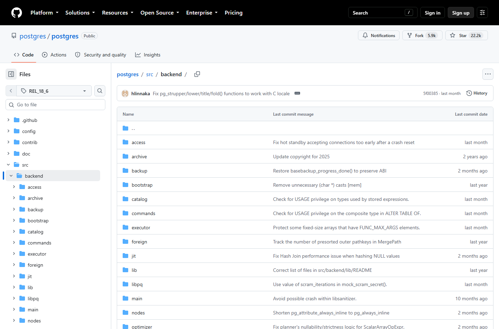
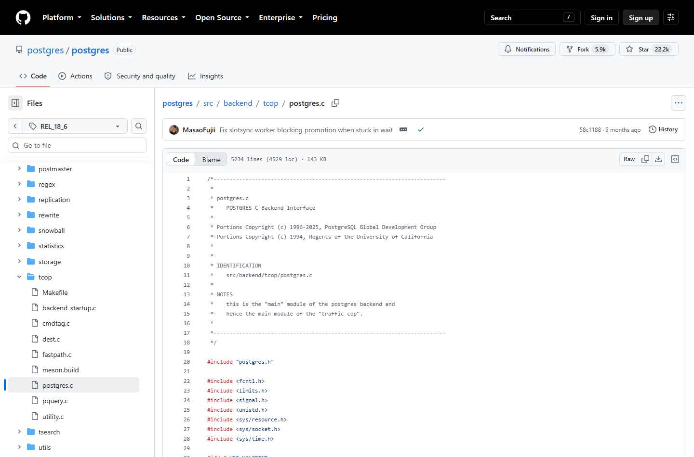
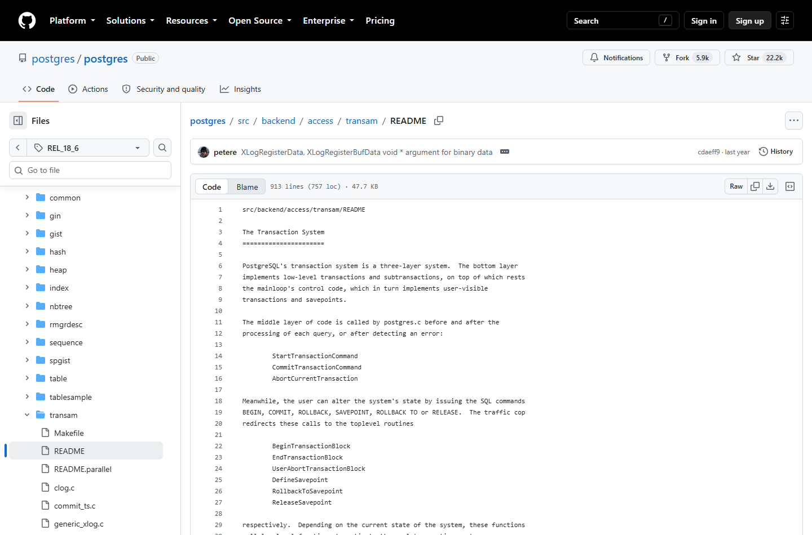

OSS PROJECT INTRO · POSTGRESQL 系列第 5 期：架构与源码导读 · 系列收官
系列收官期。前四期建认知、跑链路、拆架构、做实战,这一期把架构图钉到代码上:src/backend 目录地图、一条查询从 postgres.c 到执行器的真实路径、heapam 里 MVCC 的代码落点,再给一份面向 Java 工程师的 C 语言读码路线。读码全程锚定官方 git 仓库的 tag REL_18_6(对应 v18.6,2026-08-13 发布),行号与文件名逐个对过,不凭记忆讲源码。读完这本"内核地图册",再回头看第 3 期那张架构图,每一根线你都知道它落在哪个文件。
为什么读 PG 的源码?第 1 期说过:大量国产数据库与分析型 MPP 以 PG 为底座二次开发——读懂 PG 的源码与术语,等于拿到理解这一整层生态的钥匙;而且它是极少数"文档、注释、代码三位一体"的 C 项目,每个目录几乎都有 README,官方文档 Part VII 就是官方导读。
为什么 C 语言不构成门槛?读码不是写码。你需要认识的 C 特性其实很收敛:指针与结构体、宏、函数指针(回调)。PG 的编码风格保守克制——没有花哨的模板元编程,只有 35 年沉淀的直白工程。Java 工程师真正的优势在这里:你懂事务、索引、并发,缺的只是"这些概念在 C 里叫什么、住在哪个文件"——本期就补这张映射表。
为什么是现在?因为前四期你已经装过它、连过它、拆过它。带着架构印象读代码,每读一个文件都在给旧地图钉钉子;反过来裸读源码,三个月也走不出目录迷雾。
第一纪律:读码必须锚定 tag。PG 官方 git 仓库的 tag 格式是 REL_主版本_小版本,本文全部锚定 REL_18_6(与官网 Latest 的 18.6 同源)。GitHub 上的 postgres/postgres 是官方镜像,浏览无碍,合并请求不在此收——提交去官方 git 流程。

src/backend 是服务端的主战场,按"功能族"分家,六大族先记住:
| 目录族 | 职责 | 关键文件/入口 |
|---|---|---|
| tcop/(交通指挥) | 后端主循环,收发并分发每条查询 | postgres.c(后端"main"模块) |
| parser + rewrite + optimizer | 解析、分析重写、生成计划 | analyze.c、planner.c |
| executor/ | 按计划树执行取数 | execMain.c、execScan.c 族 |
| access/(访问方法) | 表与索引的存取:heap、btree、transam | heap/heapam.c、transam/xact.c |
| storage/ | 缓冲区、锁、大文件与 WAL 底层 | buffer/bufmgr.c、lmgr/ |
| catalog/ + utils/ | 系统目录与基础设施(内存、日志、错误) | pg_class 相关、palloc/elog |
来源注记——目录职责对照官方文档 Part VII Internals → Overview(postgresql.org/docs/18/overview.html,2026-09-30 核对)与 REL_18_6 源码树(2026-09-30 浏览);src/backend 各子目录另多有自带 README。
每条连接 fork 出来的后端进程,它的"main"就是 src/backend/tcop/postgres.c。文件头注释自报家门:

"traffic cop(交通警察)"这个名字起得极准:它不亲自办案,只负责把每条查询按规程派发到各站。简单查询协议的处理函数 exec_simple_query 就是第 3 期"查询五阶段"的代码化身——解析、重写、计划、执行,依次调用,一步不跳:
/* tcop/postgres.c · exec_simple_query(简化示意) */
queryTree = pg_parse_query(query_string); /* ① 解析 */
queryTree_list = pg_analyze_and_rewrite(parsetree, /* ② 分析重写 */
...);
plantree_list = pg_plan_queries(queryTree_list, ...); /* ③ 计划 */
PortalStart(portal); PortalRun(portal, ...); /* ④ 执行 */
/* 收尾:事务边界由 StartTransactionCommand /
CommitTransactionCommand 包住(见 transam README) */对着第 3 期那张五阶段流程图看这段:图上的每个方框,就是一个真实存在的函数调用。读到这一步,"架构图"和"源码"两个世界就接上了。
事务系统的自我介绍,藏在 src/backend/access/transam/README 开篇:

第 3 期讲的 MVCC,代码落点在 src/backend/access/heap/heapam.c:heap_update 把旧元组标上 xmax、再把新版本元组插入页面;元组头上那两个事务号字段(xmin/xmax)定义在 src/include/access/htup_details.h 的元组头结构里。可见性判断由 transam 层根据快照与事务提交状态完成——第 3 期的因果链,在代码里一节一节都能摸到:
不要按目录顺序硬啃,按"行为 → 模块 → 函数"倒着走。四周计划,每周产出一篇自己的笔记图:
| 周次 | 目标行为 | 主战场 | 自测问题 |
|---|---|---|---|
| 第 1 周 | 一条 SELECT 的旅程 | postgres.c → executor/ | 五阶段各对应哪个函数调用? |
| 第 2 周 | 一条 UPDATE 的一生 | heapam.c + transam/ | 新旧版本怎么共存?谁标记 xmax? |
| 第 3 周 | 一次提交的落盘 | xlog.c + bufmgr.c | 提交时在等什么?检查点做了什么? |
| 第 4 周 | 一条连接的诞生 | main/main.c + postmaster/ | 连接如何变成专属后端进程? |
C 语言读码心法四条:一,头文件是地图,先看 src/include 里对应模块的 .h,结构体字段比函数体好懂;二,宏当别名读,别展开,PG 的宏大多只是命名美化;三,目录 README 与官方 Internals 章先于代码,它们是内核开发者自己写的导读;四,工具用 grep 加 IDE 跳转就够,不必迷信花哨索引。读完每周的行为,把第 3 期的架构图重新画一遍——画到第三遍,这张图就是你的了。
每题点击选项立即反馈 · 共 3 题
1. PG 官方 git 仓库里,对应 v18.6 的 tag 写法是?
2. tcop/postgres.c 被文件头注释称为 traffic cop,它的职责是?
3. MVCC 的"旧元组标 xmax、新版本插入"发生在哪个文件?
三个本质区别。一,抽象层不同。Spring 的源码是你业务代码的"下方一层",调用关系、生命周期、扩展点都有现成的心理模型;PG 内核在数据库抽象的另一端,你要面对的是页、元组、缓冲、锁这些与业务语言完全脱节的原语——所以读内核的第一步不是找 main 函数,而是建立原语词典(元组是什么、页怎么组织、快照怎么表示),词典没建完就追函数,必迷路。二,演化动力不同。框架源码围着 API 兼容与开发体验转,读的时候问"用户怎么用";内核源码围着硬件与一致性转,读的时候要问"磁盘一次寻址多大代价、一次写多大才是原子的"——用性能与可靠的问题驱动读码,比用调用栈驱动有效得多。三,文档耦合度不同。框架的好文档在社区博客,质量参差;PG 的 README、注释、官方 Internals 章是内核作者写的,可信度极高——读 PG 要"先读文后读码",读框架要"先读码再对照文"。方法调整成三句话:先建原语词典(第 2 期与第 3 期概念就是底稿);以行为为单位切片(本周计划的行为四问),不做目录顺序的苦行僧;每读完一个行为,用自己的话把机制讲一遍,讲不顺就回去重读。内核读码的目标不是背函数名,是拿到"任何现象都能定位到模块"的地图感。
这是第 1 期"源码级衍生"的实战版,评估框架五步。第一步,定改造层次。PG 把存储抽象成了 table access method 接口(PG 12 起内置,见 src/include/access/tableam.h):不动内核、只实现一套 tableam,是侵入最小的正路;改 heapam 本体则是内核级改造,代价完全不同——能走接口绝不改内核。第二步,算事务账。定制的存储必须接住 MVCC 语义:xmin/xmax 的标记、快照可见性、与 vacuum 的配合;这些语义在 heapam 里实现得非常细,替换者最容易低估"可见性裁决"的复杂度——transam/README 与 htup_details.h 是必读起点。第三步,算生态账。索引(btree 等通过 tableam 下推操作)、逻辑复制、备份工具(pg_basebackup)、升级工具(pg_upgrade)对存储的假设逐个核对,内核级改造的隐性成本几乎全在生态适配,不在核心代码本身。第四步,算人力账。参考系:pgvector 这样的扩展是"能力挂载",一两人年可成;Greenplum 级的内核衍生是团队工程。对照第 1 期的分层——先问能否做成扩展,再问能否做成 tableam,最后才考虑 fork 内核。第五步,定回退路径。改造分支与上游 REL 主线的合并节奏、回归测试集(pg 自带整套 SQL 回归测试,是改造最便宜的护栏)必须在动第一行代码前定好。结论口径:存储引擎级改造的可行性,三分看技术,七分看"改造层次选得对不对、生态账算得全不全"。
PostgreSQL 系列,五期收束成五句话:
五期一图:从"它是什么"到"它为什么稳",再到"它长什么样"、"怎么用它干活"、"代码在哪一行"——同一张架构图,被五个高度各钉了一遍钉子。下一步建议:把第 5 期的四周读码计划排进日历,读完回来重画第 3 期那张架构图。
感谢你跟完 PostgreSQL 全系列。课程目录里还有更多开源项目的系列(从 Nacos 到 Kafka、从 Redis 到 Ollama),欢迎按需取用。
Primary source:postgres/postgres @ REL_18_6(src/backend) 与 官方文档 Part VII → Overview of PostgreSQL Internals——本期文件路径、函数名与注释引文均出自该 tag 源码树与官方文档(2026-09-30 核对)。